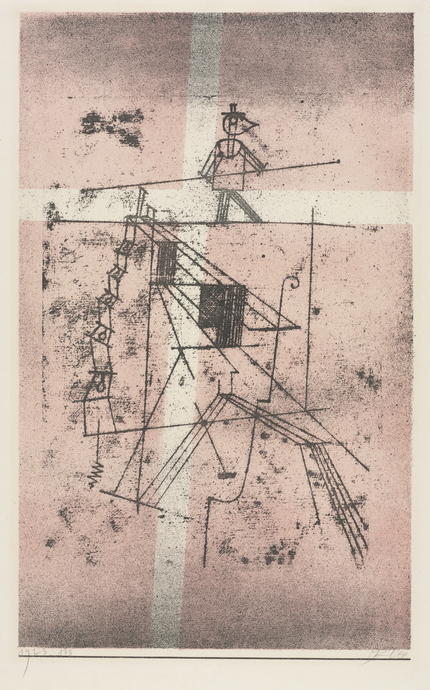
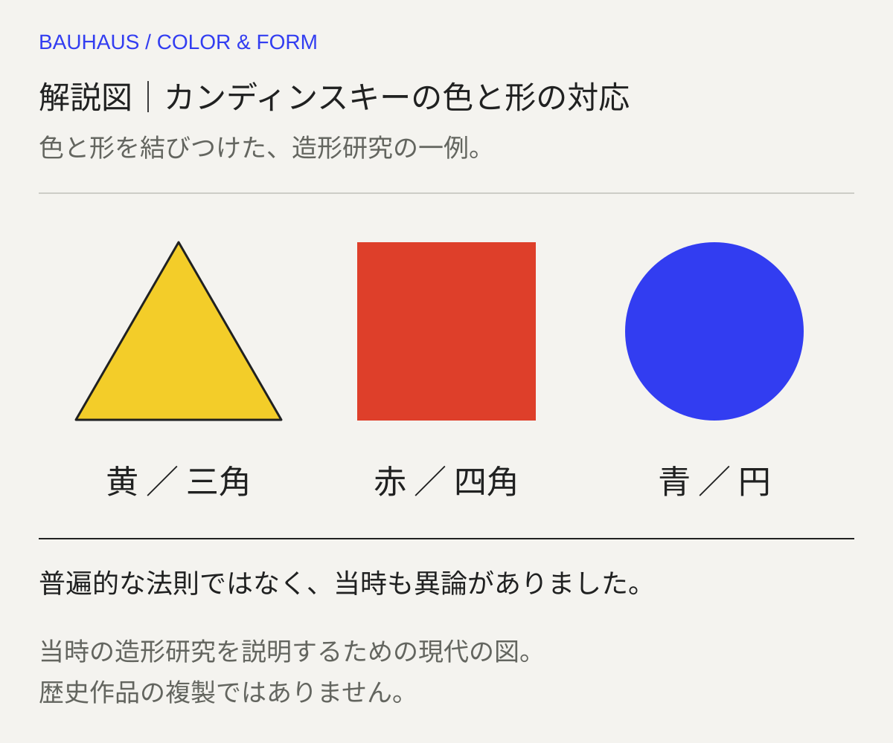
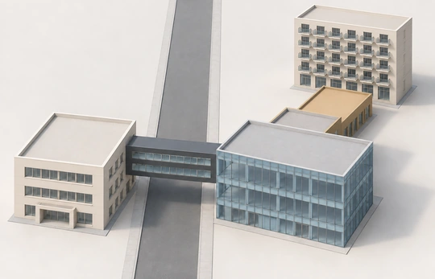

色を、情報の役割に割り当てる。
大きな表題と中央の本文は暗色、左右の分類・展示案内は赤。黄色い面と横罫線が情報のまとまりを示しています。単に三原色を飾りとして並べた構成ではありません。
本文試作・実作品画像1点収録 / 代表画像セットは整備中 · 2026-11-01
学校・教育
Bauhaus
バウハウスは、1919年にドイツにできた学校です。
絵だけでなく、いすや食器、建物のつくり方も学びました。
学生たちは、材料にさわり、色を組み合わせ、手を動かして試しました。
「どんな形なら使いやすい？」。作品を見るときも、この問いが手がかりになります。
LOOK FIRST / BAUHAUS
色、文字、並べ方を分けて見ると、ポスターや紙面の工夫がつかみやすくなります。


すべて本図鑑が制作した解説図です。当時の作品・復刻ポスターではありません。幾何学や原色だけでBauhaus全体を定義せず、下の当時の作品候補と教育・工房の背景で確かめます。4図は代表作品の収録点数に含めません。
当時の作品候補と照合する ↘READ THE SCHOOL / 学校の広がりを読む

画像を表示できませんでした。下の所蔵元リンクから作品を確認できます。
BAUHAUS / INFORMATION DESIGN · 作品：1923年 / 写真：2019年
Oskar Schlemmer / Bauhaus-Museum Weimar（撮影者の作品記録による）
学校の展示構成を伝える補助画像です。象徴的なポスター、教材、家具、建築の代表画像セットが揃ったことを意味しません。撮影個体の版・刷年は未照合のため、1923年の原刷りとは断定していません。
大きな表題と中央の本文は暗色、左右の分類・展示案内は赤。黄色い面と横罫線が情報のまとまりを示しています。単に三原色を飾りとして並べた構成ではありません。
左に分類、中央に説明、右に展示内容。5つの横段を対応させることで、学校の活動と展示するものを行ごとに比べられます。
学校、工房、建築、絵画と彫刻、舞台という見出しが並びます。絵画や幾何学模様だけではない、Bauhausの広がりを読むための補助資料です。
上の3点は実際に取得した写真の観察です。ガラスの反射が一部の本文に重なります。スマートフォンでは細字を読む代わりに、色・列・段の対応を見てください。
Oskar Schlemmer, Die Ausstellung 1923 — Die Bauhauswoche, 1923. Photograph: Wuselig, 21 September 2019, CC0 1.0, via Wikimedia Commons. Collection recorded as Bauhaus-Museum Weimar.
原写真の提供者・作品記録 ↗原作品：作者・公開年と日独米の保護期間資料を照合し、保護期間経過と評価。写真：撮影者WuseligによるCC0 1.0。確認日 2026-10-31。
2019年9月のGLAM on Tourで撮影された写真を、撮影者が公開したCommonsの正規原画像から取得。提供バイトを変更せず保存しています。美術館の商用制限付き配布画像を転載したものではありません。紙の周囲の展示背景と反射も写真の一部です。 ページ表示は全体構図・縦横比・色を保持した720／1200pxの縮小WebP。原写真は原寸リンクから開けます。原本と表示用画像のSHA-256を別々に記録しています。
この写真の個別利用条件 / 写真のCC0 1.0 / 収録画像の権利台帳
原作品は日本・ドイツ・米国の保護期間資料に照らした個別評価です。全法域への保証ではありません。写真のCC0と原作品の期間経過は別の根拠です。権利台帳に出典・評価・未確定事項を記録しています。
REFERENCE WORK / 参照作品（代表作品とは別）

画像を表示できませんでした。下の所蔵元リンクから作品を確認できます。
PAUL KLEE / REFERENCE · 1923
Paul Klee / The Cleveland Museum of Art
バウハウス在籍期のクレー：均衡と緊張を考える参照例。CMA1961.154、1923年の色石版画、state IVc。学校刊行物・授業成果とは確認していないため、Bauhaus代表作品3〜5点の判定には含めません。
綱渡りの人物は画面上部の一部を占め、横に延びる棒と足元の線の関係が釣り合いを感じさせます。
人物の下には階段や足場のような線が折れ曲がりながら続きます。明るい帯と粒状の色面が、その細い構造を区切ります。
館はBauhaus在籍中の制作とし、綱渡りを創作に必要な均衡と緊張に結び付けて解説しています。学校刊行物や授業課題としての使用を確認した画像ではありません。
形と配置は掲載画像の観察です。在籍期と均衡・緊張の解釈はCMAの個別解説に基づき、学校のカリキュラムへ拡張しません。
Paul Klee, Tightrope Walker, 1923. The Cleveland Museum of Art, Gift of The Print Club of Cleveland, 1961.154. CC0.
所蔵元の個別作品記録 ↗原作品：館の個別公開対象。配信画像：当該APIのCC0指定。確認日 2026-11-01。
公式原JPEGは無加工で保存。表示画像のみ縦横比を保って縮小・WebPへ再符号化（切り抜き・色補正なし）。参照作品の別台帳に原本と表示画像のhashを記録。
美術館のOpen Access方針 / CC0 / 収録画像の権利台帳
所蔵館の個別公開指定とCC0方針に基づきます。全法域の権利保証や美術館の推奨を意味しません。

解説図｜カンディンスキーの色と形の対応。黄と三角、赤と四角、青と円。ワイマール期の調査で多数の賛同を得た一方、オスカー・シュレンマーらの批判もあった。内省に基づく造形研究であり、カンディンスキーは異なる秩序体系とその相対性も教えていた。普遍的な科学法則ではない。当時の造形研究を説明するための現代の図。歴史作品の複製ではありません。
色値・輪郭・配置は本図鑑の解説用です。当時の調査票の復元や、Bauhaus全体の固定ルールではありません。
一次出典：Bauhaus Kooperation — Kandinskyの授業 ↗この補助図：1点（自作）。歴史代表作品画像：1点。自作図は代表画像3〜5点の判定に含めません。
AIで制作した接続解説図です。原作の完全模写を目指すAAGAとは別の分類で、建築の寸法・配置を簡略化しています。
デッサウ校舎の接続関係を参考にした生成イメージ（2026年制作）。写真ではなく、実際の配置・寸法・外観とは異なる学習用模型です。

左の職業学校―道路上の管理橋―ガラス張りの工房、そして工房―低いFestive area（集会・食堂部）―アトリエという、機能の異なる棟のつながりを読み取る図です。
参照建築：Walter Gropius and office、デッサウ校舎（1925–26年）／この図：2026年生成の接続学習模型（改訂7）。
Bauhaus Kooperation：棟の機能・接続の解説 ↗ · Bauhaus Dessau：校舎の公式案内 ↗ · CRIC：建築の著作物の利用に関する解説 ↗
参照建築はWalter Gropiusと設計事務所による1925–26年の校舎。図の主要階層は職業学校3階・橋2層・工房3階・集会食堂部1階・アトリエ5階です。接続を説明するため、棟の長さ・窓割・敷地寸法・向きや外観を簡略化しています。実測模型、正確な平面図、特定時点の復元ではなく、窓の個数から実際の部屋数は読み取れません。
第三者の建築写真・図面を転載せず作成した、棟の機能と接続を読む現代の説明図です。日本の著作権法46条に関するCRICの建築物利用の解説も参照しています。写真・実測図・精密復元ではなく、CC0やあらゆる法域での利用保証は付けません。
作品の知名度や画像の入手しやすさだけで選びません。紹介したい作品と、調べて分かったことをまとめました。画像を載せられるかどうかは、別に確かめています。画像の利用許諾を確認できていないものは掲載していません。
作品の内容を説明する見出し
原題：Punkt und Linie zu Fläche（Bauhausbücher 9）— Tanz、p.36 / fig.9
バウハウスで教えた形や色を考えるための、本の1ページです。
絵の見た目だけでなく、何をどう学んだかを知る手がかりにします。
基礎造形・理論書
学校で形や色をどう教えたかを、具体的な分析図と結びつける候補です。絵の見た目だけでなく、何をどう学んだのかを説明するために選んでいます。
Gettyの出品リストが特定している、1926年版のページです。MoMA所蔵の1928年の第2版とは区別します。本づくりにはそれぞれの制作者の役割があります。著者が亡くなった年だけで、本全体を自由に使えるとは判断しません。図版そのものはまだ実際に見ていません。
金属のパイプを、いすの骨組みに使っています。
体を受け止めるのは、座る所や背もたれなどに張った布です。
パイプと布が、それぞれどこを支えるかが見どころです。
家具・素材・製造
厚い詰め物のあるクラブチェアを、鋼管（こうかん。鋼のパイプ）の骨組みと、体を支える布の面に置き換えた例です。バウハウスで働いていた1925年の先行版と結びつけて見ます。工業用の材料を、家具にどう生かしたのでしょう。
所蔵されている椅子の年代である1927–1928年を、最初の設計年にはしません。製造者について館は「帰属」、つまり、その製造者によると考えられるという扱いにしています。確定とはしません。Wassilyという呼び名はカンディンスキー（Kandinsky）に由来します。ただし、彼が注文した椅子だったとは、この資料からはいえません。
バウハウスの金属の工房でつくられた、お茶のための器です。
金属の本体に、黒い木の部品を組み合わせています。
器、持ち手、ふたの関係から、形と使い方を考えられます。
金属工房・プロダクト
MoMAは、バウハウスの金属工房でつくられたと記録しています。円や球などの形、材料、使うための組み立て方を、工房での具体的な制作と結びつけられます。
高価な金属を使った工芸品です。バウハウスの製品が、すべて安く大量につくられたものではなかったこともわかります。
バウハウスの作品を見せる催しのポスターです。
丸や四角を斜めに組み合わせ、文字と学校の印も入れています。
形は飾りになるだけでなく、何を・いつ・どこで開くかを伝えます。
展覧会の広報・図形と文字による情報設計
円と四角でできた十字形を斜めに置き、校章と一緒に、何を・いつ・どこで開くかを伝えています。図形が飾りになるだけでなく、催しを知らせる働きをする例です。作者が学校にいたからだけでなく、学校の展覧会を伝える仕事として選んでいます。
公式解説によると、もとの版の「7–9月」という表示は、後からステッカーで変更されました。訂正前と後の版を分けて見ます。ここでの着眼点は資料の文章に基づき、画像の取得と実見はまだ終わっていません。以前の候補だったBayerによるPoelzig講演ポスターは、比べる候補として検証記録に残しています。
バウハウスの校舎です。
授業をする所、物をつくる所、暮らす所などが、組み合わされています。
それぞれの場所が、どうつながるかに目を向けます。
建築・学校と工房の空間
Stiftung Bauhaus Dessauの年表には、1926年に校舎を公開したことが記録されています。学ぶことと、ものをつくることを収めた空間として見ます。
建築作品の権利と、写真を撮った人の権利は別です。建物の外観写真だから自由に使える、とは判断しません。
手を動かして、材料や形を学ぶ。バウハウスは、芸術・工芸・建築を結び付ける教育を試みた学校です。1919年に設立されました。学校が移転したり校長が交代したりするたびに、何を大切に教えるかも変わりました。
最初の拠点ヴァイマルでは、工芸の作り方を探りました。移転先のデッサウでは、工場で生産するための試作品づくりへと重点が移ります。校長のマイヤー（Meyer）は、社会が必要とする物や、その働きを調べることを重視しました。ミース（Mies）の時期には建築が中心になります。14年間の歩みは、一つの配色や図形だけでは語れません。
以下は観察のための問いです。すべての作品に共通する固定ルールや、未取得画像の実見結果ではありません。
どの色を隣に置くと、見え方が変わるでしょうか。カンディンスキー（Kandinsky）の授業ノートや、学生が取り組んだ色の課題と見比べます。大切なのは、色の組合せを自分で試して調べることです。学校全体で三原色だけを決まった組合せで使っていた、と考えないようにしましょう。
学校が作った印刷物では、文字をどこに置き、どの情報を目立たせているかを見ます。制作年と版（同じ印刷物のどの版か）も確かめましょう。
予備課程（専門の制作に進む前の基礎の授業）では、材料や形を実験しました。その後は専門の工房で制作します。完成品の丸や四角だけでなく、材料を試し、問題を解いていく過程にも注目しましょう。
工房で作られた物と建築を見比べ、使い道に合わせて部品や場所をどう配置したかを考えます。丸や四角を使っているという理由だけで、バウハウスの作品とは判断できません。
COMPARE
デ・ステイル（De Stijl）は雑誌を中心に広がった運動です。一方、バウハウスは学校でした。交流があっても、組織の仕組みや目指したことまで同じではありません。アーツ・アンド・クラフツ（Arts & Crafts）と比べるときは、工芸と工場での生産をどう結び付けたかが手がかりになります。
項目を横に並べる ↗READ TODAY
バウハウス・デッサウ財団の年表には、シカゴのニュー・バウハウス（New Bauhaus Chicago）やウルム造形大学（HfG Ulm）などが、その考えを受け継いだことが記されています。人の移住、教育、交流を通して、考え方は姿を変えながら広がりました。
このページを書くときに使った資料です。作品の説明、画像を入手できたかどうか、画像を使う条件は、それぞれ別に確かめています。検索結果で読んだ情報と、元のページを開いて確かめた情報も、調査の記録で分けています。
この項目の収録実画像：1点（図鑑全体：28点）。参照・関連実作品はこの項目1点（図鑑全体2点）。代表作品画像セットの数には含めません。